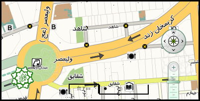

نام ايستگاه: میدان ولیعصر(عج) کد ايستگاه: K3N6 آدرس: میدان ولیعصر(عج) مساحت سرپوشیده: 43000 متر مربع مساحت فضای باز: 13 متر مربع ورودي هاي ايستگاه: 1- ضلع شمال شرقی میدان ولیعصر(عج)- بعد از بانک شهر- کوچه شاهد.